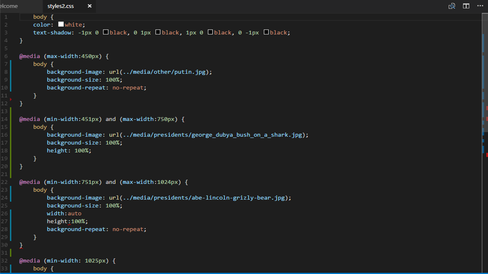

What are API's?
An API is a list of commands as well as the format of those commands that one program can send to another. It is used so that individual programs can communicate with one another directly and use each other's functions.
These are very important in building web sites because...
How Do we implement API's?
To implement API's,...
Here is an example of an API to embed twitter into your site
For a good example of media queries, go to API Media Queries Examples